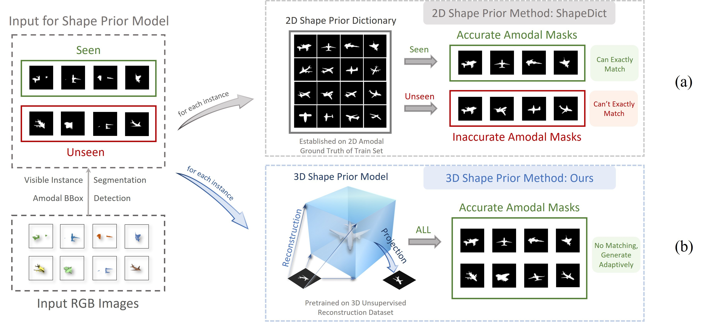
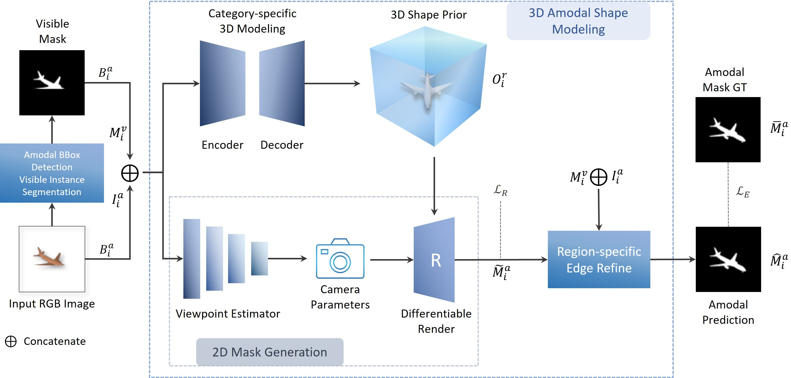
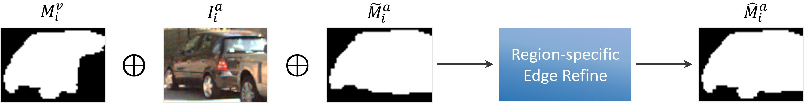
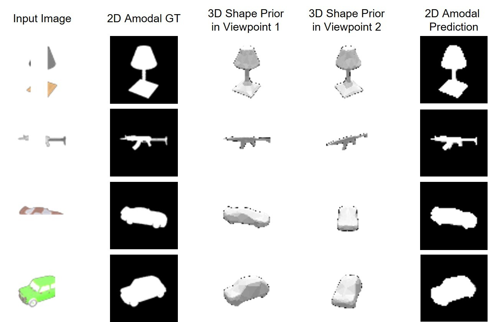

Abstract
Overview
Amodal instance segmentation aims to predict the complete mask of an occluded instance, including both visible and invisible regions. Existing 2D methods learn complete silhouettes directly in image space, but these masks are only observations of a 3D model from particular viewpoints and therefore generalize poorly to unseen views. We build a bridge between occluded 2D instances and complete 3D models through reconstruction, using a 3D shape prior to guide 2D amodal segmentation. A3D reconstructs 3D models from occluded instances without requiring 3D annotations, then projects them into 2D masks under estimated viewpoints. Pretraining on large 3D reconstruction datasets handles shape diversity, and experiments show that A3D outperforms existing 2D amodal instance segmentation methods.
01 · Figure
A finite 2D shape dictionary struggles with object viewpoints that were not observed during training. A3D reconstructs a complete 3D shape prior from each occluded instance and projects it to the estimated viewpoint, allowing the model to generate suitable 2D amodal masks adaptively.

02 · Figure
The Proposed A3D Approach

03 · Figure
Region-Specific Edge Refinement

04 · Figure
3D Shape Prior Reconstruction

Citation
BibTeX
@inproceedings{li2022a3d,
title={2{D} Amodal Instance Segmentation Guided by 3{D} Shape Prior},
author={Li, Zhixuan and Ye, Weining and Jiang, Tingting and Huang, Tiejun},
booktitle={Proceedings of the IEEE/CVF European Conference on Computer Vision},
pages={165--181},
year={2022}
}